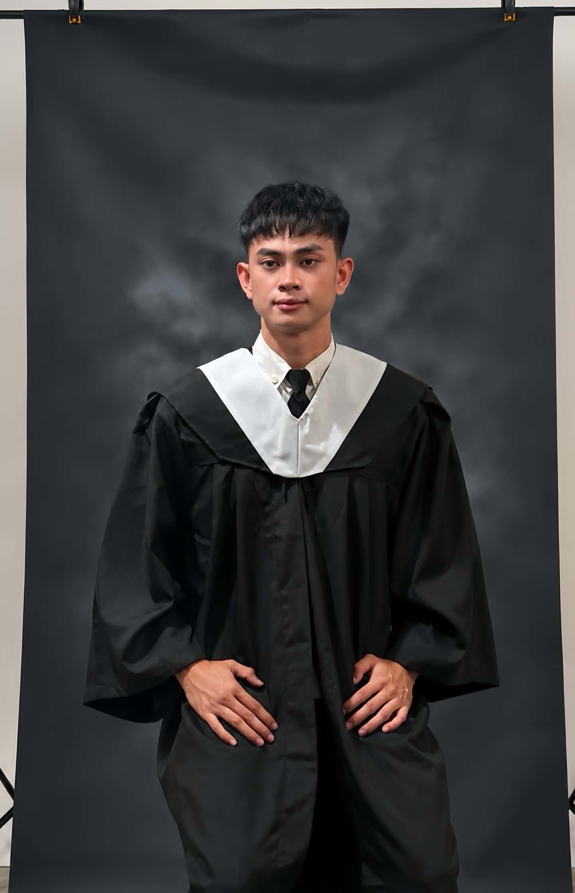

IT Graduate • Web Developer • Graphic Designer
Motivated and detail-oriented Information Technology graduate with a strong passion for web development and graphic design. Skilled in creating professional websites, social media graphics, presentations, and digital content using modern design and development tools.

BS Information Technology Graduate
Learn more about my background and professional journey.
I am a fresh graduate with a Bachelor of Science in Information Technology, specializing in web development and graphic design. I have experience creating professional social media graphics, website interfaces, presentations, and digital marketing materials using Canva and other design tools.
Although I am a fresh graduate with no formal work experience, I am eager to learn, highly motivated, and committed to delivering quality work. I enjoy solving problems, learning new technologies, and collaborating with others to achieve project goals.
My goal is to continuously improve my technical and creative skills while contributing positively to the organization I join.
A combination of technical knowledge, creative ability, and professional skills.
My academic journey and achievements.
Esperanza Umingan Pangasinan, Umingan, Pangasinan
Umingan National High School, Umingan, Pangasinan
Umingan National High School, Umingan, Pangasinan
With HonorUniversity of Eastern Pangasinan, Binalonan, Pangasinan
Graduated
I am open to job opportunities, internships, and freelance projects.
Brgy. Esperanza, Umingan, Pangasinan 2443